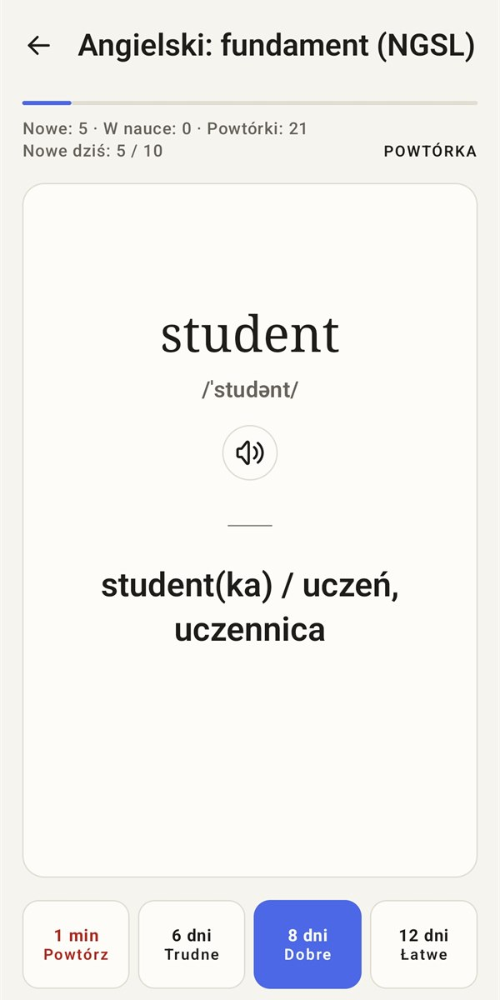
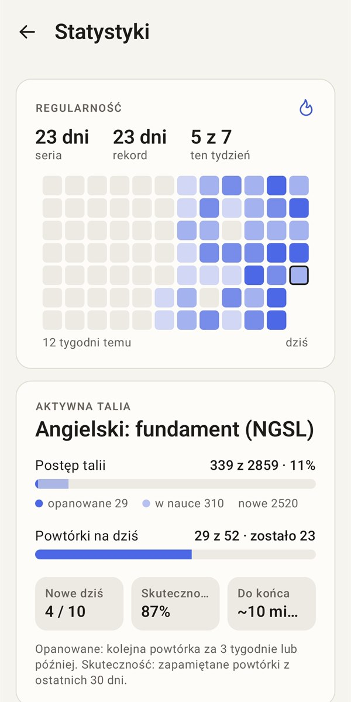
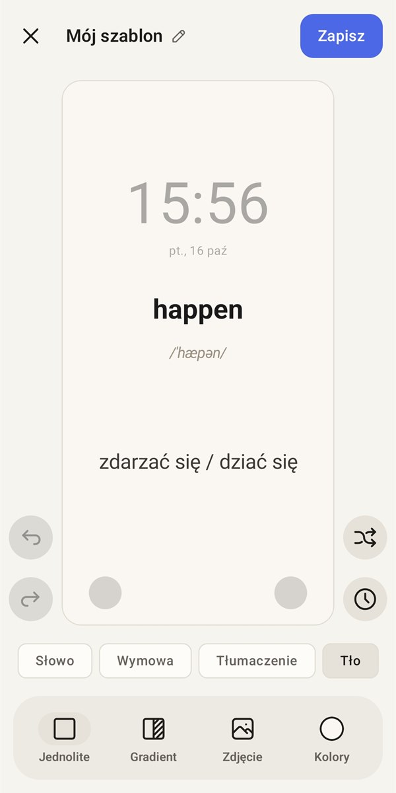

Nauka bez otwierania aplikacji
Ucz się słówek przy każdym spojrzeniu na telefon
Odblokowujesz telefon ponad 100 razy dziennie. AutoFiszki zamieniają ekran blokady w fiszkę, za każdym razem z innym słowem.
9,99 zł raz bez reklam bez konta działa offline
Android 8.0 lub nowszy · aplikacja po polsku
finally
/ˈfaɪnəli/
w końcu, wreszcie
Nocne niebo · dotknij, żeby przymierzyć
Ekran blokady
Nie musisz pamiętać o nauce. Wystarczy, że sięgasz po telefon.
-
7:05 budzik
-
8:20 w tramwaju
-
12:40 przerwa na kawę
-
17:15 kolejka w sklepie
-
22:30 przed snem
Zmienia się sama
Nowa fiszka co 15 minut, co godzinę albo raz na dobę, jak ustawisz.
Wie, co powtórzyć
Na tapetę trafiają słowa, które według harmonogramu powtórek warto teraz utrwalić.
Nie przeszkadza
Zwykła tapeta, zero powiadomień. Zmienia się najwyżej co 15 minut, żeby oszczędzać baterię.

Nauka
Krótka sesja, kiedy masz chwilę
Słowo, wymowa, tłumaczenie i jedna ocena. Algorytm FSRS‑4.5 sam wylicza, kiedy pokazać słowo znowu: za minutę, za tydzień albo za kilka miesięcy.
- Odsłuch wymowy po angielsku i hiszpańsku, także automatyczny
- Zapis IPA przy każdym angielskim słowie i przewodnik, jak go czytać
- Dzienny limit nowych słów, osobno dla każdej talii

Postęp
Widać, że to działa
Kalendarz ostatnich 12 tygodni, seria dni i postęp talii. Aplikacja szacuje też, ile zostało do jej końca w Twoim tempie.
- Seria i rekord dni nauki
- Skuteczność powtórek z ostatnich 30 dni
- Osobno dla każdej talii: opanowane, w nauce i nowe
Wygląd
Pięć gotowych wyglądów…

…albo Twój własny
Tło z własnego zdjęcia, gradientu albo koloru. Tekst przesuwasz palcem i powiększasz szczypnięciem, a zegar telefonu widać na podglądzie, więc nic się z nim nie zderzy.
- Zdjęcie z galerii z przyciemnieniem pod tekst
- Cofnij i ponów każdą zmianę
- Kolor, pogrubienie i kursywa osobno dla słowa, wymowy i tłumaczenia
Poza tym
Przeglądanie
Cała talia jak stos fiszek: w obie strony, po kolei albo losowo.
Własne słówka
Dodajesz słowo ręcznie albo wklejasz całą listę. Działa też plik CSV.
Kopia zapasowa
Nowy telefon? Cała nauka przechodzi z Tobą w jednym pliku.
Prywatność
Bez konta i bez internetu. Aplikacja nie ma nawet uprawnienia do sieci.
Talie w cenie
10 gotowych talii. Instalujesz i zaczynasz.
W taliach językowych słowa idą od najczęstszych, czyli od tych, na które naprawdę trafisz w rozmowie.
- Angielski: fundament (NGSL)wymowa: angielski (USA) · ~92% codziennej mowy 2859 słów
- Hiszpański: fundamentwymowa: hiszpański · ~92% mowy potocznej 2500 słów
- Stolice świata195 słów
- Pierwiastki chemiczne118 słów
- Stolice Afryki54 słowa
- Stolice Azji48 słów
- Stolice Europy45 słów
- Stolice Ameryki Północnej23 słowa
- Stolice Australii i Oceanii14 słów
- Stolice Ameryki Południowej12 słów
Cena
Płacisz raz. Tak, jak kiedyś kupowało się programy.
Typowa aplikacja do nauki języków kosztuje 30–60 zł miesięcznie albo przerywa naukę reklamami. Tu nie ma ani jednego, ani drugiego.
- Wszystkie talie i funkcje
- Przyszłe aktualizacje w cenie
- Bez reklam i subskrypcji
- Bez konta, działa offline
Mniej niż bilet do kina, a zostaje z Tobą na lata.
Pytania i odpowiedzi
Częste pytania
Czy to na pewno jednorazowy zakup?
Tak. Płacisz raz w Google Play i aplikacja jest Twoja, razem ze wszystkimi taliami i przyszłymi aktualizacjami. Nie ma subskrypcji, mikropłatności ani wersji premium.
Czy w aplikacji są reklamy?
Nie ma i nigdy nie będzie. Skoro płacisz za aplikację, nie jesteś produktem.
Jak działa nauka na ekranie blokady?
AutoFiszki ustawiają tapetę ekranu blokady z fiszką i same ją podmieniają, od co 15 minut do raz na dobę. Słowo widzisz za każdym razem, gdy sięgasz po telefon, bez otwierania czegokolwiek. Wygląd tapety wybierasz z gotowych szablonów albo układasz we wbudowanym edytorze.
Co to jest FSRS i czym różni się od zwykłych fiszek?
FSRS‑4.5 to nowoczesny algorytm powtórek rozłożonych w czasie. Na podstawie Twoich ocen przewiduje, kiedy zaczniesz zapominać dane słowo, i właśnie wtedy je pokazuje. W praktyce robisz mniej powtórek, a pamiętasz więcej.
Czy usłyszę wymowę słów?
Tak. Przy każdym słowie jest głośnik, a w ustawieniach możesz włączyć automatyczne czytanie. Aplikacja korzysta z syntezatora mowy, który masz w telefonie, więc nie potrzebuje do tego internetu. Angielskie słowa mają też zapis IPA, a wbudowany przewodnik uczy, jak go czytać.
Czy mogę dodać własne słówka?
Tak. Możesz założyć własną talię, dodawać słowa pojedynczo albo wkleić całą listę: słowo, tłumaczenie i opcjonalnie wymowę. Działa też import z pliku CSV.
Jakich języków mogę się uczyć?
W zestawie są talie angielska (2859 słów) i hiszpańska (2500 słów) z polskimi tłumaczeniami, a do tego stolice świata i pierwiastki chemiczne. Własną talię zrobisz w dowolnym języku.
Czy aplikacja wymaga internetu albo konta?
Nie. Wszystkie dane są na Twoim telefonie, a aplikacja nie ma nawet uprawnienia dostępu do internetu. Przy zmianie telefonu przenosisz całą naukę jednym plikiem kopii zapasowej.
Na jakich telefonach działa?
Na telefonach z Androidem 8.0 lub nowszym. Wersja na iOS nie jest obecnie planowana.
Twój telefon i tak będzie odblokowywany 100 razy dziennie.
Niech chociaż uczy Cię słówek.
Pobierz AutoFiszki w Google Play